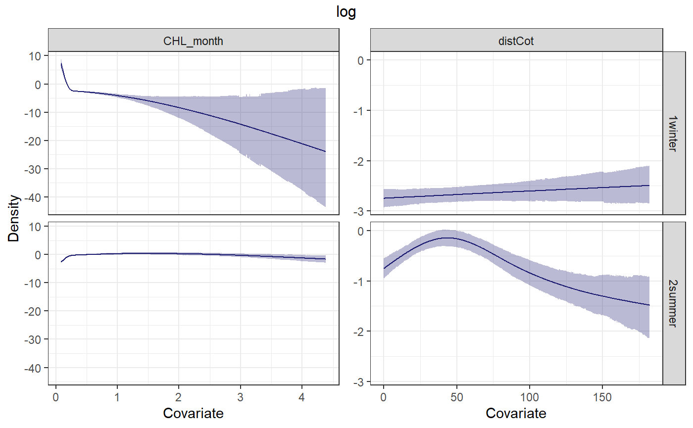

II. DSM example with MOLA MOLA
II_DSM_example_with_MOLA_MOLA.RmdDensity Surface Modelling (DSM) consist in adjusting a Generalized Additive Model (GAM) on count data, while taking simultaneously into account imperfect detection (with distance sampling data) and covariates to obtain smoothed spatial maps of density. Once a model is adjusted, if its fit to the data is good enough, it can be used to predict the response variable (density of animals) over large areas, and possibly outside of the surveyed area.
geffaeR uses the DSM package where ore information and a clear explanation on the use of Density Surface Models can be found (e.g. http://distancesampling.org/R/vignettes/mexico-analysis.html). In this vignette it is presented how to fit a simple DSM with geffaeR and what is needed to do it applied on an applied example.
The vignette is organized in two main parts:
- Data presentation
- DSM with geffaeR
1.Data presentation
To illustrate how to fit DSMs in geffaeR, it is proposed to use the DSM_pack_MOLMOL included as data within geffaeR. It consist in a list of list bringing together all files needed for a DSM analysis.
#> List of 2
#> $ legdata:'data.frame': 1704 obs. of 11 variables:
#> $ segdata:'data.frame': 3354 obs. of 19 variables:
#> List of 1
#> $ plot_detectionMOLMOL:List of 1
#> ..$ all_session:List of 4
#> .. ..$ graph :List of 9
#> .. .. ..- attr(*, "class")= chr [1:2] "gg" "ggplot"
#> .. ..$ esw : num [1:3] 0.15 0.147 0.155
#> .. ..$ esw_cv : num 2.7
#> .. ..$ distFit:List of 2
#> .. .. ..- attr(*, "class")= chr "dsmodel"
#> List of 1
#> $ MOLMOL_obs_output:List of 5
#> ..$ distdata :'data.frame': 3259 obs. of 18 variables:
#> ..$ obsdata :'data.frame': 2072 obs. of 9 variables:
#> ..$ countdata_leg:'data.frame': 517 obs. of 4 variables:
#> ..$ countdata_seg:'data.frame': 779 obs. of 5 variables:
#> ..$ trunc : num 1
#> List of 1
#> $ : chr "MOLMOL"
#> Classes 'sf' and 'data.frame': 84554 obs. of 18 variables:
#> $ Id : num 1 1 2 2 3 3 4 4 5 5 ...
#> $ distCot : num 22.14 22.14 3.16 3.16 8.6 ...
#> $ dist200 : num 135 135 156 156 152 ...
#> $ distCanyon: num 338 338 309 309 309 ...
#> $ Slope_1 : num 12000 12000 22147 22147 4243 ...
#> $ depth : num 27 27 17 17 25 25 26 26 26 26 ...
#> $ Slope : num 12000 12000 22147 22147 4243 ...
#> $ SlopePerce: num 0.012 0.012 0.02215 0.02215 0.00424 ...
#> $ session_ : Factor w/ 4 levels "1winter","2summer",..: 1 2 1 2 1 2 1 2 1 2 ...
#> $ CHL_month : num NA NA NA NA NA NA NA NA NA NA ...
#> $ SeaHeight_: num NA NA NA NA NA NA NA NA NA NA ...
#> $ SLA_month : num NA NA NA NA NA NA NA NA NA NA ...
#> $ CHL_clim : num NA NA NA NA NA NA NA NA NA NA ...
#> $ SST_clim : num NA NA NA NA NA NA NA NA NA NA ...
#> $ POINT_X : num 1455167 1455167 1435162 1435162 1439163 ...
#> $ POINT_Y : num 6495464 6495464 6493729 6493729 6494076 ...
#> $ Area : num 16 16 16 16 16 16 16 16 16 16 ...
#> $ geometry :sfc_POINT of length 84554; first list element: 'XY' num 12.6 45.1
#> - attr(*, "sf_column")= chr "geometry"
#> - attr(*, "agr")= Factor w/ 3 levels "constant","aggregate",..: NA NA NA NA NA NA NA NA NA NA ...
#> ..- attr(*, "names")= chr "Id" "distCot" "dist200" "distCanyon" ...What Is This Bizarre Fish?
The sunfish, Mola mola, is a marine fish species that can reach up to 1 ton! It can live in temperate and tropical waters. It have a particular shape that makes it easy to recognize :

There are some speculations that sunfish densities in the oceans have increased, but the evidence is scarce and indirect. Here the aim is to estimate the density of sunfish is the North-Western Mediterranean Sea.
How ?
The data were collected during the SAMM surveys (Suivi Aérien de la Mégafaune Marine, https://www.observatoire-pelagis.cnrs.fr/observatoire/Suivi-en-mer/suivi-aerien/) in 2011 and 2012. These surveys consist in flying over the sea in a plane (equiped with bubble windows) at a height of \(180\) metres above sea level and at a speed of \(180\) kilometers per hour along pre-defined transects. As the transects are flown over, two observers on either side of the plane scan the sea surface for sightings of marine megafauna.


2. DSM
To fit some simple DSM with geffaeR, \(4\) objects are necessary:
- segdata (output of
prepare_effort()) - shape (shape of the study area)
- observation (countdata_leg and contdata_seg outputs of
prepare_obs()) - esw / distFit : output of
plot_detection()
To also predict, a fifth object will be needed:
- gridata (sf object)
The object collates all the locations at which we may want to predict sunfish densities from a fitted DSM.
\(6\) functions in geffaeR are used in the DSM process (and \(1\) is optional for using a soap smooth, dashed in the flowchart below) :

2.1 Simple DSM with geffaeR
Prepare predata and segdata for DSM
The first step consist in imputing missing values of covariates of segdata and gridata. Missing data imputation is done either using the Amelia package (https://cran.r-project.org/web/packages/Amelia/index.html) or the missMDA package (https://cran.r-project.org/web/packages/missMDA/). Missing data imputation is used to ensure that a complete dataset with no missing values for any of the covariates will be used during model fitting. It is up to the user to check that the imputed values are realistic and plausible. Here we will consider two physiographic covariates, seafloor depth and distance to the nearest coastline, and one environmental covariate, chlorophyll a concentration averaged over a month. We can choose to use a logarithm transformation during missing data imputation to ensure that only positive values will be imputed. Here the missMDA package is used by specifying imputation = “PCA” below.
library(geffaeR) # get segdata segdata <- DSM_pack_MOLMOL$effort_output$segdata # get grid grid <- DSM_pack_MOLMOL$gridata # get shape shape <- DSM_pack_MOLMOL$shape_med predata_output <- prep_predata(segdata = segdata, gridfile_name = grid, varenviro = "CHL_month", do_log_enviro = "CHL_month", varphysio = c("depth","distCot"), do_log_physio = c("depth", "distCot"), imputation = "PCA", shape = shape, verbose = F ) #> missing data in grid and segdata must be as NAs and nothing else (not 0) #> although coordinates are longitude/latitude, st_intersects assumes that they are planar #> although coordinates are longitude/latitude, st_intersects assumes that they are planar #> There are 38 cells with missing values in segdata #> #> There are 343 cells with missing values in predata #>
The output of a call to this function is a wee bit complicated:
str(predata_output, max.level = 1) #> List of 6 #> $ predata :'data.frame': 21182 obs. of 8 variables: #> $ segdata :'data.frame': 3354 obs. of 17 variables: #> $ pca_seg :List of 5 #> ..- attr(*, "class")= chr [1:2] "PCA" "list " #> $ pca_pred :List of 5 #> ..- attr(*, "class")= chr [1:2] "PCA" "list " #> $ seg_mipat :List of 3 #> ..- attr(*, "class")= chr "summary.aggr" #> $ pred_mipat:List of 3 #> ..- attr(*, "class")= chr "summary.aggr"
- predata : gridata with only covariates, coordinates and cells size (Area column)
- segdata : segdata
- pca_seg : output of PCA function on segdata (eig, coord on axis, …)
- pca_pred : output of PCA function on predata (gridata) (eig, coord on axis, …)
- seg_mipat : extended infos on missing values of covariates in segdata
- pred_mipat : extended infos on missing values of covariates in predata
Add observations on segdata
Once a complete dataset for covariates is available and satisfactory, sightings of the species of interest, namely the sunfish can be join to these data. Note that the effort data here has been segmented in a pre-processing step. The function to join sightings to the covariate data is named, pardon my French! ajout_obs:
effort_w_obs <- ajout_obs(countdata_leg = DSM_pack_MOLMOL$list_prepare_obs_MOLMOL$MOLMOL_obs_output$countdata_leg, legdata = DSM_pack_MOLMOL$effort_output$legdata, countdata_seg = DSM_pack_MOLMOL$list_prepare_obs_MOLMOL$MOLMOL_obs_output$countdata_seg, segdata = predata_output$segdata) str(effort_w_obs, max.level = 2) #> List of 2 #> $ segdata_obs:'data.frame': 3354 obs. of 19 variables: #> ..$ Transect.Label: Factor w/ 297 levels "08a/101","08a/102",..: 129 129 129 129 129 129 129 129 129 130 ... #> ..$ Seg : Factor w/ 5357 levels "1_1winter","10_1winter",..: 1 533 534 536 537 1112 2223 3334 4445 2 ... #> ..$ Sample.Label : Factor w/ 2589 levels "1_1winter","10_1winter",..: 1 2362 2363 2364 2364 1 1112 1813 1924 2368 ... #> ..$ date : Date[1:3354], format: "2011-12-01" "2012-05-21" ... #> ..$ survey : Factor w/ 2 levels "ASI","SAMM": 2 2 2 2 2 2 2 2 2 2 ... #> ..$ Effort : num [1:3354] 11.5 12.81 9.09 10.9 10.9 ... #> ..$ X : num [1:3354] 1066262 1064795 1054794 1055798 1065737 ... #> ..$ Y : num [1:3354] 6301700 6300892 6296430 6296876 6301347 ... #> ..$ longitude : num [1:3354] 7.55 7.53 7.4 7.41 7.54 ... #> ..$ latitude : num [1:3354] 43.7 43.7 43.7 43.7 43.7 ... #> ..$ Region.Label : Factor w/ 9 levels "MED_08a","MED_08b",..: 6 6 6 6 6 6 6 6 6 6 ... #> ..$ seaState : int [1:3354] 3 1 2 2 2 3 3 3 1 2 ... #> ..$ Area : num [1:3354] 22560 22560 22560 22560 22560 ... #> ..$ subjective : Factor w/ 19 levels "EE","EG","EM",..: 6 6 6 8 8 6 6 6 6 6 ... #> ..$ depth : num [1:3354] 335 343 363 480 343 ... #> ..$ distCot : num [1:3354] 5 6 3.61 4.12 6 ... #> ..$ CHL_month : num [1:3354] 0.344 0.181 0.191 0.137 0.133 ... #> ..$ n : num [1:3354] 0 0 1 1 0 0 0 0 0 0 ... #> ..$ y : num [1:3354] 0 0 1 1 0 0 0 0 0 0 ... #> $ legdata_obs:'data.frame': 1704 obs. of 13 variables: #> ..$ Transect.Label: Factor w/ 297 levels "08a/101","08a/102",..: 129 129 129 129 129 129 129 130 130 130 ... #> ..$ Sample.Label : Factor w/ 2589 levels "1_1winter","10_1winter",..: 1 1112 1813 1924 2362 2363 2364 2 2257 2365 ... #> ..$ survey : Factor w/ 2 levels "ASI","SAMM": 2 2 2 2 2 2 2 2 2 2 ... #> ..$ Region.Label : Factor w/ 9 levels "MED_08a","MED_08b",..: 6 6 6 6 6 6 6 6 6 6 ... #> ..$ left : Factor w/ 18 levels "AB","AC","AM",..: 3 13 13 13 3 3 8 3 3 3 ... #> ..$ right : Factor w/ 20 levels "AB","AC","AM",..: 14 3 3 9 17 17 4 1 14 17 ... #> ..$ session : Factor w/ 4 levels "1winter","2summer",..: 1 1 1 1 2 2 2 1 1 2 ... #> ..$ Effort : num [1:1704] 22.99 1.36 5.94 12.99 12.81 ... #> ..$ seaState : int [1:1704] 3 3 3 1 1 2 2 2 3 1 ... #> ..$ subjective : Factor w/ 19 levels "EE","EG","EM",..: 6 6 6 6 6 6 8 6 8 6 ... #> ..$ Area : num [1:1704] 22560 22560 22560 22560 22560 ... #> ..$ n_detected : num [1:1704] 0 0 0 0 0 1 1 2 0 10 ... #> ..$ n_ind : num [1:1704] 0 0 0 0 0 1 1 2 0 10 ...
The dataframe segdata in effort_w_obs has now two additional 2 column: one called “n” corresponding to the number of sightings made on segment of effort; and “y” corresponding to the total number of individuals counted.
Fit all possible model
The next step consist in fitting all possible models and choose the best model to use for DSM with fit_all_dsm function. The minimum requirements to use this function are :
- segdata completed (output of
prep_predata) and with observation (output ofajout_obs). - distFit or esw (outputs of
plot_detection, see the vignette ???) - obsdata
- predictors : covariates of segdata which will be used to fit gam models.
# get segdata_completed_w_obs segdata_completed_w_obs <- effort_w_obs$segdata_obs # get distFit distFit <- DSM_pack_MOLMOL$list_plot_detection_MOLMOL$plot_detectionMOLMOL$all_session$distFit # get obsdata obsdata <- DSM_pack_MOLMOL$list_prepare_obs_MOLMOL$MOLMOL_obs_output$obsdata # get covariates on which we fit gam model (predictors) predictors <- c("CHL_month", "distCot", "depth") # fit models fit_dsm <- fit_all_dsm(distFit = distFit, segdata_obs = segdata_completed_w_obs, obsdata = obsdata, predictors = predictors ) #> * Response variable is the number of individuals #> * Detection function provided #> * Fitting all possible models, please wait #> * Using AIC for model selection #> * Estimating loocv on k best models: please wait #> Warning in log(mu): production de NaN #> Warning: Relative effective sample sizes ('r_eff' argument) not specified. #> For models fit with MCMC, the reported PSIS effective sample sizes and #> MCSE estimates will be over-optimistic. #> Warning: Some Pareto k diagnostic values are slightly high. See help('pareto-k-diagnostic') for details. #> Warning in log(mu): production de NaN #> Warning: Relative effective sample sizes ('r_eff' argument) not specified. #> For models fit with MCMC, the reported PSIS effective sample sizes and #> MCSE estimates will be over-optimistic. #> Warning: Some Pareto k diagnostic values are too high. See help('pareto-k-diagnostic') for details. #> Warning in log(mu): production de NaN #> Warning: Relative effective sample sizes ('r_eff' argument) not specified. #> For models fit with MCMC, the reported PSIS effective sample sizes and #> MCSE estimates will be over-optimistic. #> Warning: Some Pareto k diagnostic values are slightly high. See help('pareto-k-diagnostic') for details. #> Warning in log(mu): production de NaN #> Warning: Relative effective sample sizes ('r_eff' argument) not specified. #> For models fit with MCMC, the reported PSIS effective sample sizes and #> MCSE estimates will be over-optimistic. #> Warning in log(mu): production de NaN #> Warning: Relative effective sample sizes ('r_eff' argument) not specified. #> For models fit with MCMC, the reported PSIS effective sample sizes and #> MCSE estimates will be over-optimistic. #> Warning: Some Pareto k diagnostic values are slightly high. See help('pareto-k-diagnostic') for details.
A call to fit_all_dsm() yields as output a table that sums up model fitting according to different indicators and 2 list of the k best models (5 by default) sorted by their “stacking_weights”. Both lists are the same but one has standardized covariates (that is mean-centered and unit-variance, labelled best_models) and the other has the raw values (best_models4plotting, which will be used for plotting purposes).
#> Warning: le package 'kableExtra' a été compilé avec la version R 3.6.2
#>
#> Attachement du package : 'kableExtra'
#> The following object is masked from 'package:dplyr':
#>
#> group_rows| model | index | Convergence | AIC | ResDev | NulDev | ExpDev | stacking_weights |
|---|---|---|---|---|---|---|---|
| count~ te(longitude, latitude, bs = ‘cs’) +s(CHL_month, k = 4, bs = ‘cs’) + s(distCot, k = 4, bs = ‘cs’) | 5 | 1 | 6203.360 | 1807.225 | 2160.803 | 16.4 | 0.1034205 |
| count~ te(longitude, latitude, bs = ‘cs’) +s(CHL_month, k = 4, bs = ‘cs’) + s(depth, k = 4, bs = ‘cs’) | 6 | 1 | 6204.752 | 1805.386 | 2156.313 | 16.3 | 0.0566959 |
| count~ te(longitude, latitude, bs = ‘cs’) +s(CHL_month, k = 4, bs = ‘cs’) | 2 | 1 | 6204.778 | 1806.174 | 2155.712 | 16.2 | 0.6030632 |
| count~ te(longitude, latitude, bs = ‘cs’) +s(distCot, k = 4, bs = ‘cs’) | 3 | 1 | 6222.264 | 1804.929 | 2128.215 | 15.2 | 0.2368190 |
| count ~ te(longitude, latitude, bs = ‘cs’) | 1 | 1 | 6225.529 | 1804.515 | 2120.993 | 14.9 | 0.0000015 |
| count~ te(longitude, latitude, bs = ‘cs’) +s(depth, k = 4, bs = ‘cs’) | 4 | 1 | 6225.649 | 1803.691 | 2121.118 | 15.0 | NA |
visualize splines
One does want to visualize splines of each variable fitted with fit_all_dsm, and it is possible with pred_splines.
# get first model of fit_dsm fit_dsm_1 <-fit_dsm$best_models4plotting[[1]] splines <- pred_splines( segdata = segdata_completed_w_obs, dsm_model = fit_dsm_1 ) str(splines, max.level = 1) #> List of 3 #> $ df_splines:'data.frame': 4000 obs. of 6 variables: #> $ g_splines :List of 9 #> ..- attr(*, "class")= chr [1:2] "gg" "ggplot" #> $ spatial :'data.frame': 20000 obs. of 6 variables: #> ..- attr(*, "out.attrs")=List of 2
- g_splines : correspond to the ggplot graph that gives splines of each variable of the model.
- df_splines : a data.frame to be used for further plotting if needs be
# Visualize variable splines splines$g_splines
Predict all models of fit_all_dsm
This step consists in getting predicted values from models fitted with the output of fit_all_dsm.
# get predata predata <- predata_output$predata predicted_models <- predict_all( listdsm = fit_dsm, predata = predata ) #> * Predicting from 5 best models: please wait #> * Stacking predictions and done ;) str(predicted_models) #> 'data.frame': 127092 obs. of 4 variables: #> $ mean : num 0.0178 0.0202 0.0193 0.0212 0.0179 ... #> $ se : num 0.0106 0.012 0.0114 0.0124 0.0104 ... #> $ cv : num 0.597 0.594 0.59 0.587 0.582 0.581 0.573 0.571 0.521 0.52 ... #> $ model: chr "stacking" "stacking" "stacking" "stacking" ...
predict_all gives a data.frame of predicted values and standard error of the k best models of fit_all_dsm with a weighted combination of the k best named ‘stacking’ in the model column. By default, stacking is used on the 5 models with the smallest AIC.
Prediction map
predict_map allows to visualize prediction of predict_all.
# get combination of all models pred_stack <- predicted_models %>% filter(model == "stacking") # Set predata as sf object predata_custom <- predata %>% mutate(stack_pred = pred_stack$mean) %>% st_as_sf(coords = c("longitude", "latitude"), crs = 4326) # Build prediction map map_pred <- pred_map_dsm( predata = predata_custom, grid = DSM_pack_MOLMOL$gridata %>% st_transform("+proj=aea +lat_1=43 +lat_2=62 +lat_0=30 +lon_0=10 +x_0=0 +y_0=0 +ellps=intl +units=m +no_defs"), var = "stack_pred", title = substitute(expr = paste("Density prediction of ", italic("Mola mola"), " for 2011 and 2012 during SAMM campaign")) # title = "Density prediction of Mola mola for 2011 and 2012 during SAMM campaign" ) map_pred
2.2 Adding a categorical variable
The sampling occurred during 2 seasons (summer and winter) and we can expect difference in sunfish densities between summer and winter. Covariate effects may also be different between winter and summer, and we may want to allow for this possibility during modelling.
library(stringr) # get distdata distdata <- DSM_pack_MOLMOL$list_prepare_obs_MOLMOL$MOLMOL_obs_output$distdata # map of Mola mola occurence per season distdata %>% filter(detected != 0) %>% mutate(session = stringr::str_extract(session, "[:alpha:]+")) %>% ggplot() + geom_point(aes(x = X, y = Y, size = size, colour = size)) + geom_sf(data = NEA_simplified_FR %>% st_as_sf(), mapping = aes()) + coord_sf(xlim = c(2,12), ylim = c(40,45)) + facet_grid(.~session) + scale_colour_viridis_c() + theme_bw()
What has to be added to the simple DSM process ?
-
prep_predatawith col2keep = “session” -
fit_all_dsmwith splines_by = “session” -
pred_splineswith splines_by = “session” -
pred_map_dsmwith facet_param = “session”
library(geffaeR) library(tidyverse) # get segdata segdata <- DSM_pack_MOLMOL$effort_output$segdata %>% mutate(session = fct_drop(session)) # get grid grid <- DSM_pack_MOLMOL$gridata %>% rename(session = session_) %>% mutate(session = fct_drop(session)) # get shape shape <- DSM_pack_MOLMOL$shape_med # build predata outputs predata_output <- prep_predata(segdata = segdata, gridfile_name = grid, varenviro = "CHL_month", do_log_enviro = "CHL_month", varphysio = c("depth", "distCot"), do_log_physio = c("depth", "distCot"), shape = shape, imputation = "PCA", col2keep = "session", verbose = F ) #> missing data in grid and segdata must be as NAs and nothing else (not 0) #> although coordinates are longitude/latitude, st_intersects assumes that they are planar #> although coordinates are longitude/latitude, st_intersects assumes that they are planar #> There are 38 cells with missing values in segdata #> #> There are 343 cells with missing values in predata #> effort_w_obs <- ajout_obs(countdata_leg = DSM_pack_MOLMOL$list_prepare_obs_MOLMOL$MOLMOL_obs_output$countdata_leg, legdata = DSM_pack_MOLMOL$effort_output$legdata, countdata_seg = DSM_pack_MOLMOL$list_prepare_obs_MOLMOL$MOLMOL_obs_output$countdata_seg, segdata = predata_output$segdata) # get segdata_completed_w_obs segdata_completed_w_obs <- effort_w_obs$segdata_obs # get distFit distFit <- DSM_pack_MOLMOL$list_plot_detection_MOLMOL$plot_detectionMOLMOL$all_session$distFit # get obsdata obsdata <- DSM_pack_MOLMOL$list_prepare_obs_MOLMOL$MOLMOL_obs_output$obsdata # get covariates on which we fit gam model (predictors) predictors <- c("CHL_month","distCot","depth") # fit models fit_dsm <- fit_all_dsm(distFit = distFit, segdata_obs = segdata_completed_w_obs, obsdata = obsdata, predictors = predictors, splines_by = "session" ) #> * Response variable is the number of individuals #> * Detection function provided #> * Fitting all possible models, please wait #> * Using AIC for model selection #> * Estimating loocv on k best models: please wait #> Warning in log(mu): production de NaN #> Warning: Relative effective sample sizes ('r_eff' argument) not specified. #> For models fit with MCMC, the reported PSIS effective sample sizes and #> MCSE estimates will be over-optimistic. #> Warning: Some Pareto k diagnostic values are too high. See help('pareto-k-diagnostic') for details. #> Warning in log(z): production de NaN #> Warning in log(z): production de NaN #> Warning in log(z): production de NaN #> Warning in log(z): production de NaN #> Warning in log(z): production de NaN #> Warning in log(z): production de NaN #> Warning in log(mu): production de NaN #> Warning: Relative effective sample sizes ('r_eff' argument) not specified. #> For models fit with MCMC, the reported PSIS effective sample sizes and #> MCSE estimates will be over-optimistic. #> Warning: Some Pareto k diagnostic values are too high. See help('pareto-k-diagnostic') for details. #> Warning in log(mu): production de NaN #> Warning: Relative effective sample sizes ('r_eff' argument) not specified. #> For models fit with MCMC, the reported PSIS effective sample sizes and #> MCSE estimates will be over-optimistic. #> Warning: Some Pareto k diagnostic values are too high. See help('pareto-k-diagnostic') for details. #> Warning in log(z): production de NaN #> Warning in log(mu): production de NaN #> Warning: Relative effective sample sizes ('r_eff' argument) not specified. #> For models fit with MCMC, the reported PSIS effective sample sizes and #> MCSE estimates will be over-optimistic. #> Warning in log(mu): production de NaN #> Warning: Relative effective sample sizes ('r_eff' argument) not specified. #> For models fit with MCMC, the reported PSIS effective sample sizes and #> MCSE estimates will be over-optimistic. #> Warning: Some Pareto k diagnostic values are slightly high. See help('pareto-k-diagnostic') for details. # get first model of fit_dsm fit_dsm_1 <- fit_dsm$best_models4plotting[[1]] splines <- pred_splines( segdata = segdata_completed_w_obs, dsm_model = fit_dsm_1, splines_by = "session" ) splines$g_splines #> [[1]]
#>
#> [[2]]
Now we can visualize the differences between winter and summer in the estimated relationships with covariates. Predictions can also be made for each season.
library(sf) # get predata predata <- predata_output$predata predicted_models <- predict_all( listdsm = fit_dsm, predata = predata ) #> * Predicting from 5 best models: please wait #> * Stacking predictions and done ;) # get combination of all models pred_stack <- predicted_models %>% filter(model == "best_1") # Set predata as sf object predata_custom <- predata %>% mutate(stack_pred = pred_stack$mean) %>% st_as_sf(coords = c("longitude", "latitude"), crs = 4326) # Build prediction map map_pred <- pred_map_dsm( predata = predata_custom, grid = DSM_pack_MOLMOL$gridata %>% st_transform("+proj=aea +lat_1=43 +lat_2=62 +lat_0=30 +lon_0=10 +x_0=0 +y_0=0 +ellps=intl +units=m +no_defs"), var = "stack_pred", title = substitute(expr = paste("Density prediction of ", italic("Mola mola"), " for 2011 and 2012 during SAMM campaign")), facet_param = "session" ) map_pred